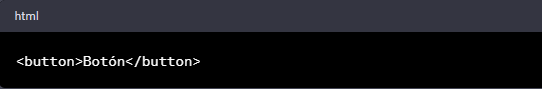
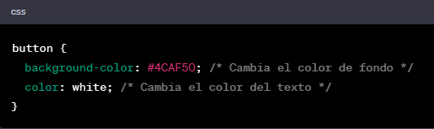
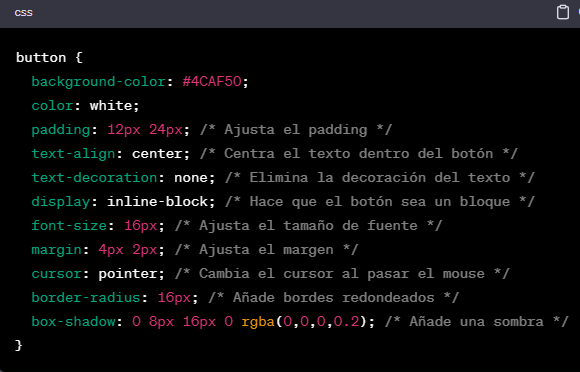

Los botones en HTML y CSS son esenciales para la creación de interfaces de usuario efectivas y atractivas, y pueden personalizarse fácilmente para adaptarse a la estética y funcionalidad de un sitio web o aplicación.
Saber masPara hacer esto, primero debes agregar un elemento de botón a tu código HTML. Puedes hacer esto utilizando la etiqueta "button".
Para hacer esto, puedes usar la propiedad "background-color" para cambiar el color de fondo del botón, y la propiedad "color" para cambiar el color del texto dentro del botón.
Para darle un estilo más atractivo al botón, podemos agregar un efecto de sombra utilizando la propiedad "box-shadow". También podemos ajustar el padding para darle más espacio al contenido del botón.
¡Y eso es todo! Con estos pasos, has creado un botón personalizado en HTML y CSS. Si deseas cambiar el texto dentro del botón, simplemente modifica el texto dentro de la etiqueta " button " en tu código HTML.